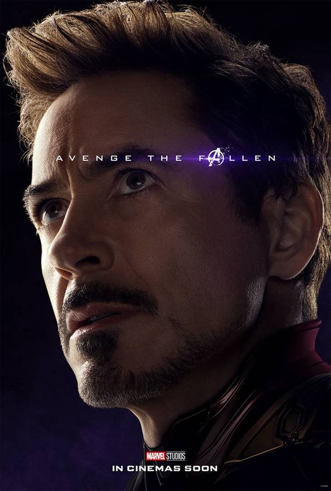

Auto-descrito como gênio, bilionário, playboy e filantropo, possui uma armadura eletromecânica feita por ele mesmo. Downey foi escalado como parte de seu contrato de quatro filme com a Marvel Studios, que incluiu Homem de Ferro 2 e Os Vingadores. Downey disse que ele, inicialmente, forçou Whedon a fazer com que Stark fosse o personagem principal: "Bem, eu disse, 'Eu preciso estar na sequência de abertura. Eu não sei o que você está pensando, mas Tony precisa dirigir essa coisa.' Ele disse, 'Tudo bem, vamos tentar isso.' Nós tentamos e não funcionou, porque este é um tipo diferente de coisa, a história, a ideia e o tema, e todo mundo é apenas um braço do polvo." Sobre a evolução do personagem dos filmes anteriores, Downey disse: "Em Homem de Ferro, que foi uma história de origem, ele era sua própria epifania e redenção. Homem de Ferro 2 é sobre não ser uma ilha, lidando com questões de legado e criar espaço para outros. Em Os Vingadores, ele está jogando-o para baixo com os outros".
